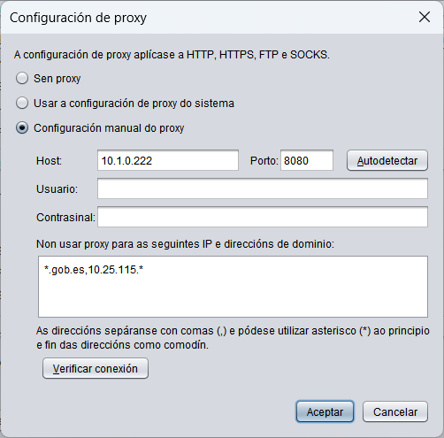

Configuración de proxy
Autofirma debe acceder a Internet por distintos motivos e, de ser necesario, deberase configurar un proxy de rede para permitirllo. Os propósitos para os que Autofirma pode requirir o acceso á rede son:
- Comunicarse coas páxinas web nas que se realizan trámites de firma.
- Buscar actualizacións (Só se se atopa habilitada a opción).
- Enviar estatísticas (Só se se atopa habilitada a opción).
Todas as conexiónes de rede realizadas por Autofirma aplicarán a configuración de proxy aquí establecida.

As opcións de configuración de
proxy son:
- Sen proxy: As conexións de rede faranse de forma directa.
- Configuración de proxy do sistema: A aplicación identificará a configuración que debe aplicar para cada URL segundo a configuración establecida no sistema operativo e/ou navegador. Esta configuración pode non ser exactamente igual á establecida en Windows.
- Configuración manual de proxy: Permite establecer a configuración específica de proxy a utilizar. As opcións configurables son:
- Host: Nome de dominio ou IP do proxy.
- Porto: Número de porto de acceso ao proxy.
- Usuario: Nome de usuario a utilizar cando o proxy requira autenticación. Opcional.
- Contrasinal: Contrasinal de usuario a utilizar cando o proxy requira autenticación. Opcional.
- Non usar proxy para as seguintes direccións IP e direccións de dominio: Listaxe de direccións IP e nomes de dominio aos que se debe acceder de forma directa (sen pasar polo proxy configurado manualmente). Comunmente, configuraranse aquí as direccións da intranet na que se traballe cando se realicen operacións de sinatura desde aplicacións web situadas tanto dentro como fóra da súa intranet.
As direccións escribiranse separadas por comas (,) e pódense escribir asteriscos (*) ao principio ou final de cada unha a modo de comodín para identificar subdominios ou subredes completas. Opcional.
Adicionalmente, proporciónanse as seguintes opcións:
- Autodetectar: Extrae da configuración do sistema o host e o porto a utilizar para unha dirección xenérica.
- Verificar conexión: Comproba a configuración manual de proxy para o acceso a unha dirección xenérica.
A configuración establecida aplicarase ao pulsar sobre o botón OK. Se se pulsa o botón Cancelar, pecharase a xanela sen aplicar a configuración.